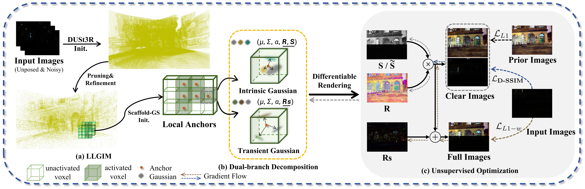

Novel view synthesis (NVS) in low-light scenes remains a significant challenge due to degraded inputs characterized by severe noise, low dynamic range (LDR) and unreliable initialization. While recent NeRF-based approaches have shown promising results, most suffer from high computational costs, and some rely on carefully captured or pre-processed data—such as RAW sensor inputs or multi-exposure sequences—which severely limits their practicality. In contrast, 3D Gaussian Splatting (3DGS) enables real-time rendering with competitive visual fidelity; however, existing 3DGS-based methods struggle with low-light sRGB inputs, resulting in unstable Gaussian initialization and ineffective noise suppression. To address these challenges, we propose LL-Gaussian, a novel framework for 3D reconstruction and enhancement from low-light sRGB images, enabling pseudo normal-light novel view synthesis. Our method introduces three key innovations: 1) an end-to-end Low-Light Gaussian Initialization Module (LLGIM) that leverages dense priors from learning-based MVS approach to generate high-quality initial point clouds; 2) a dual-branch Gaussian decomposition model that disentangles intrinsic scene properties (reflectance and illumination) from transient interference, enabling stable and interpretable optimization; 3) an unsupervised optimization strategy guided by both physical constrains and diffusion prior to jointly steer decomposition and enhancement. Additionally, we contribute a challenging dataset collected in extreme low-light environments and demonstrate the effectiveness of LL-Gaussian. Compared to state-of-the-art NeRF-based methods, LL-Gaussian achieves up to 2,000× faster inference and reduces training time to just 2%, while delivering superior reconstruction and rendering quality.

Overview of LL-Gaussian pipeline.Overview of the LL-Gaussian pipeline. (a) Given a set of unposed low-light images, our method first employs DUSt3R to generate dense point clouds, which are pruned and refined by the proposed LLGIM. (b) Initialized anchors are passed for Gaussian optimization, where a dual-branch decomposition is applied: the Intrinsic Gaussian branch captures static reflectance and illumination, while the Transient Gaussian branch models dynamic residuals. The decomposed Gaussians are rendered via differentiable splatting to component maps. (c) Unsupervised optimization leverages input and prior images to jointly optimize the Gaussian attributes and enhancement module.
@article{sun2025ll,
author={Sun, Hao and Yu, Fenggen and Xu, Huiyao and Zhang, Tao and Zou, Changqing},
title={LL-Gaussian: Low-Light Scene Reconstruction and Enhancement via Gaussian Splatting for Novel View Synthesis},
journal={arXiv preprint arXiv:2504.10331},
year={2025},
}